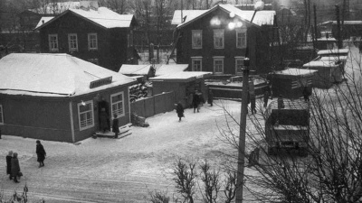
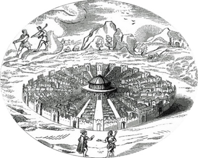

{kind=link}
I
Казалось, что утро никогда не начнется. Первые робкие лучи солнца тонули в густом тумане, поднимавшемся с моря. Волны тихо плескались, ударяясь о край набережной, позеленевшей от водорослей, прочно налипших на камнях. Равномерное покачивание воды и несмолкаемые крики низко летящих над заливом чаек навевали мысли о вечности.
Мир будто замер в каком-то странном оцепенении, а узкие улочки, ведущие от морской гавани к замку Кастель-Нуово, еще несли в себе воспоминания о римских легионах, маршировавших по ним. В этот ранний час город был практически пуст. Лишь один случайный прохожий спешил куда-то по своим делам. Внезапно в его голове пронеслось необычное видение. Он даже на секунду остановился, пытаясь отогнать его от себя, уж очень нелепым оно казалось.
Он явственно увидел, как улицы перед ним наполнились разношерстной толпой странно одетых людей. Даже женщины и те были в коротких одеждах с обнаженными руками, плечами и ногами, что выглядело уж совсем неприлично. На лицах многих красовались темные очки, а в руках они держали небольшие плоские коробочки, которые направляли то в одну, то в другую сторону. Все шумно переговаривались на непонятном языке. Особенно громко слышалась речь человека, идущего впереди и держащего в одной руке флажок на длинной палке, а в другой некое устройство, которое, скорее всего, и усиливало его голос, звучавший на всю улицу.
Прохожий очень бы удивился, если б узнал, что увидел свой родной Неаполь, каким он станет через несколько столетий в начале XXI века. А привиделась ему самая обыкновенная группа туристов, прибывших полюбоваться старинными средневековыми кварталами и с энтузиазмом поглощавших стандартный набор фраз о достопримечательностях города, исторгаемый очередным приставленным к ним гидом.
Впрочем, видение быстро исчезло. А причиной тому был всадник, промчавшийся во весь опор от городских ворот к замку. Черный развевающийся плащ с большим капюшоном, почти закрывавшим его лицо, а также вышитые на плаще и сбруе коня кресты, не оставляли никакого сомнения в его принадлежности к святой организации по расследованию еретической греховности, в простонародье более известной под кратким названием итальянской инквизиции.

| Замок Кастель-Нуово, Неаполь |
А скорость, с которой он пронесся мимо прохожего, говорила о важности и безотлагательности дела, по которому он прибыл в Неаполь. И не дай Бог оказаться в этот момент на его пути! Мысль об этом и послужила разумной причиной для прохожего юркнуть в нишу ближайшего дома. Проделал он это с превеликой быстротой и ловкостью, что, если и не спасло ему жизнь, то, по крайней мере, наверняка избавило от возможности быть сбитым и покалеченным несшейся по улице лошадью.
Но события в это только с виду тихое летнее утро на этом закончились лишь для нашего прохожего. А для главного героя этой повести все только начиналось...
II
Похоже, всадника уже ждали в замке, так как он не сделал ни малейшей попытки сбавить скорость перед воротами. А те будто сами открылись перед ним и пропустили во внутренний двор, где к нему тут же подбежал служка, помог остановить не на шутку разгоряченного быстрой ездой коня и принял поводья. И тотчас же на ступенях центрального входа выросла фигура не просто встречающего, а самого начальника тюрьмы.
Весь его вид выражал одновременно радость от прибытия высокого гостя вперемешку с уважением и подобострастием, и в то же время значимость собственной занимаемой должности. Удивительно, как эти непростые проявления человеческого характера могли проявиться лишь в легком изгибе рук, немного согнутых в коленях ногах и особом наклоне головы? Но, рядом не было никого, кто мог бы по достоинству оценить эту сцену. Да и, слава Богу, потому что в Неаполе не было желающих лишний раз оказаться не то что в замке Кастель-Нуово, но даже и поблизости от него.
Начальник тюрьмы поспешил вниз навстречу всаднику:
- О, Ваше Преосвященство Стефано Манчини, как я рад снова видеть вас, Римского дознавателя, в нашем скромном приюте для исправления заблудших душ! Надеюсь, дорога из Рима не была излишне утомительной?
Лицо вновь прибывшего оставалось беспристрастным, и по выражению его глаз невозможно было понять, рад ли он этой встрече, или просто выполняет свои обязанности:
- Послушайте, Серджио Конти, я знаю, какую большую работу вы выполняете по выявлению и наказанию отступников от истинной христианской веры. Поверьте, ваши заслуги высоко ценятся в Риме, и я лично неоднократно ходатайствовал перед Великим Инквизитором о скорейшем переводе вас из Неаполя в Рим. Но сейчас я прибыл к вам по одному важному делу, не терпящему отлагательства и к обсуждению которого я хотел бы приступить как можно быстрее.
Серджио Конти:
- Могу ли я более детально узнать причину вашего приезда в Неаполь?
- В вашем замке содержится некий Томмаззо Кампанелла?
- Да, отъявленный еретик, неоднократно привлекаемый к ответу святой церковью за телезианские взгляды, материализм, отрицание монархии, связи с другими отступниками от веры, а также обвиняемый в участии в заговоре против Испанской короны. Впрочем, и одного из перечисленных преступлений было бы достаточно, чтобы отправить Кампанеллу на костер, но вы же знаете, достопочтимый метр Манчини, что только великое милосердие Святой церкви к ее сынам сдерживает меня от этого шага в надежде, что еретик все же одумается и покается, и тем самым спасет свою душу.
- Ну, хорошо, хорошо. У меня есть для вас новости по поводу этого Томмаззо. Но я немного устал с дороги. Да и не пристало двум таким мужам, как мы с вами, вести серьезный разговор, стоя на улице. Пройдемте в ваши покои и продолжим нашу беседу. Кстати, в прошлый раз вы угощали меня отменным Бароло из Пьемонта.
- С превеликим удовольствием! Конечно, у меня осталось еще несколько бутылок, которые я специально приберег до вашего нового приезда. Необыкновенный аромат этого красного вина урожая 1592 года великолепно проявляет себя, если его пить из больших бокалов. Прошу вас в замок, Ваше Преосвященство.
Начальник тюрьмы и прибывший к нему гость поднялись по ступеням и скрылись в парадном входе замка за массивными дверями из резного дуба.
III
Свет с трудом проникал через маленькое зарешеченное окно камеры, расположенное у самого потолка. Поэтому узник лишь в течение нескольких часов в день мог наблюдать кусочек неба, а если повезет, то и облака, такие далекие и в то же время обладавшие завидной свободой перемещения, которой он был лишен уже много месяцев после ареста инквизицией и заточения в замок Кастель-Нуово. Но не отсутствие солнечного света сейчас волновало Томмаззо Кампанеллу. Наоборот, чем меньше солнечного света проникало в камеру, тем более четко в его голове вырисовывался замысел его следующего трактата, которому он уже давно подобрал такое удачное название - "Город Солнца":
"Люди несчастны, потому что есть неравенство. А причиной неравенства является частная собственность. Частная же собственность вырастает из моногамной семьи, наличия собственного жилища, жены и детей. Когда семья будет ликвидирована, то и воспроизводство и воспитание потомства перейдет в руки государства. А как быть с отрицательными чертами человеческой натуры? Они будут изжиты на добровольной основе, по мере того как люди познают правильность новых законов. Но ведь нужно трудиться, чтобы добывать средства существования. А труд - это проклятие человечества. Да, но в новом обществе трудиться нужно будет не более 4-х часов в день. Большинство населения должно заниматься физическим трудом. А организация производства, научное и политическое руководство целиком должно перейти к касте жрецов во главе с Главным правителем, который одновременно будет и священником, и царем, и олицетворением высшей духовной и светской власти".
Проговорив мысленно план своего будущего сочинения, Томмаззо от удовольствия потер руки и даже забыл на мгновение, что он не на свободе, а в камере для особо опасных преступников. К действительности его вернул странный звук, раздавшийся в углу. Он походил на журчание воды. Но откуда здесь взяться воде? Тем не менее, журчание не прекращалось, и вскоре вода стала заливать пол камеры. Еще через какое-то время она дошла до уровня топчана, на который был вынужден забраться узник.
Томмаззо спрыгнул вниз, подошел по воде к двери и стал стучать в нее, стараясь привлечь внимание своих тюремщиков, но никто не откликнулся на его стук и крики. А вода все прибывала и прибывала. Вскоре она дошла до середины стены, потом стала подниматься еще выше. Чтобы дышать, даже стоя на топчане, Томмаззо был вынужден встать на цыпочки. Между уровнем воды и потолком оставался лишь небольшой промежуток сантиметров в 20, где с трудом помещалась его голова. Холодная вода с привкусом морской соли и водорослей при малейшем движении узника попадала в рот, нос и уши, а через намокшую и оттого отяжелевшую одежду впивалась острыми иглами в его тело.
Томмаззо почти не сомневался, что настал его последний час. Единственной его надеждой, как ни странно, оставалась Святая инквизиция, которая никогда не убивала своих узников тайно в камере, а всегда, после завершения следствия, устраивала публичные казни. По этой логике он не должен был сейчас погибнуть. И, действительно, вода перестала прибывать, оставляя узнику возможность дышать. Так продолжалось довольно долго. Сколько, Томмаззо не мог определить, потому что часов в камере не предусматривалось. Впрочем, некий отсчет времени все же был, так как в маленьком зарешеченном окошечке дневной свет начал меркнуть и, следовательно, наступил вечер.
Вода начала отступать также неожиданно, как до этого поднималась, и вскоре от нее остались лишь лужи на мокром полу. Все в камере было насквозь мокрым: и одежда узника, и топчан, на который теперь нельзя было лечь спать. В этот момент раздался лязг ключей в замке, дверь открылась, а затем прозвучал голос стражника: "Заключенный - на выход!"
IV
Вино Бароло действительно имело отменный вкус! Оно было одновременно и чуть кисловатым, и в то же время сладким, в меру крепким и достаточно вязким. Казалось, его аромат еще нес в себе терпкий запах диких трав южных склонов Пьемонта, вобравших в себя жгучий летний зной и прохладный морской бриз, который и покрыл черные виноградные грозди тонким слоем серебристого налета.
- Еще бокал, Ваше Преосвященство? - предложил Начальник тюрьмы - и обязательно попробуйте нашей неаполитанской прошутто. Рим, конечно, великий город, но там вам никогда не подадут такой пармской ветчины, как здесь.
- Да, уважаемый, спасибо, непременно отведаю, а теперь о деле - возобновил разговор Стефано Манчини - Святая инквизиция получила новые сведения. После проведенных пыток злостный еретик и отступник от истинной веры Джордано Бруно дал письменные показания, в которых подтвердил свою связь с Томмаззо Кампанеллой. Бруно был приговорен нами к смертной казни и сожжен на костре. Я же привез вам повеление Великого инквизитора применить к указанному Томмаззо самые строгие меры воздействия, чтобы получить нужные нам признания. В связи с этим я хотел бы знать, какие из разрешенных Святой церковью пыток уже использовались и каковы результаты?
Серджио Конти:
- Сейчас заключенный находится в специальной камере, расположенной на уровне моря и соединенной с ним подземным каналом. Во время каждого прилива морская вода наполняет камеру почти до потолка, в результате чего подследственный остается в холодной воде в течение нескольких часов, имея в то же время возможность дышать. Еретик, помещенный в эту камеру до Томмаззо, уже на второй день своего там нахождения дал признательные показания.
- Отлично, уважаемый метр, но сейчас я хотел бы переговорить с Томмаззо лично, чтобы самому убедиться в степени его опасности для Святой церкви и определить наши дальнейшие действия по отношению к нему.
- Сию же минуту я отдам приказ привести заключенного. Но должен вас предупредить, что в последнее время Томмаззо впал в безумство. На допросах он ведет себя странно, не реагирует на вопросы и причиняемую ему боль, выкрикивая все время бессмысленные слова и фразы. Правда, по свидетельствам специально подсаженных к нему других узников, с ними он порой ведет вполне здравые и разумные разговоры. В любом случае, думаю, что такой опытный и искусный дознаватель, каким бесспорно являетесь вы, а другого из Рима вряд ли бы и прислали, без сомнения сделает правильные выводы в отношении этого Томмаззо.
В ожидании прихода преступника оба святейших отца еще раз наполнили свои бокалы. Бароло в лучах солнца переливалось ярким рубиновым цветом. Гость из Рима, перед тем, как в очередной раз пригубить напиток, сделал рукой несколько круговых движений, в результате чего вино в бокале также описало небольшой круг и смочило внутренние стенки. Затем стало медленно стекать вниз маслянистыми языками, что свидетельствовало о его высочайшем качестве.
V
Вскоре раздался стук, и в дверях появился стражник вместе с Томмаззо Кампанеллой, которого он подтолкнул в комнату, где за трапезой сидели Преподобные отцы. Его одежда еще несла на себе следы недавнего потопа в камере, и на пол падали капли и стекали струйки воды, довольно быстро образовавшие небольшие лужицы. Но в первую очередь обращал на себя внимание необычный взгляд арестанта, идущий из глубоко посаженных глаз. Казалось, взгляд этот пронизывал собеседника насквозь, смущая и заставляя поежиться даже сильных мира сего, и бесспорно выдавал глубокий ум и природную пытливость стоявшего перед Святыми отцами человека.
Дознаватель из Рима с интересом разглядывал Томмаззо. За долгое время своей службы в Святой Инквизиции ему неоднократно приходилось сталкиваться со многими людьми, изучать их поведение и видеть как необыкновенную стойкость истязаемых им отступников от веры, так и их слабость, а порой и трусость, но сейчас даже на него произвел впечатление особый взгляд введенного в комнату человека.
- Знаешь ли ты, почему оказался здесь?
- Догадываюсь, хотя и не вижу веских причин для моего задержания, потому что я по мере своих сил всю жизнь лишь пытался отыскать истину, всегда оставаясь верен заветам Святой католической церкви в качестве монаха Доминиканского ордена, коим до сих пор являюсь. И не более того.
- Не советую юлить и увертываться от правдивых ответов, потому что от этого в данный момент зависит твоя жизнь, это во-первых. А во-вторых, если ты и вправду монах, то должен знать, что к представителю Карающих Дланей Господа нужно всегда обращаться "Ваше Преосвященство", или в вашем ордене этому тебя, еретика, не учили?
- Прошу прощения, Ваше Преосвященство, просто моя одежда настолько еще мокрая и холодная, что мысли путаются в моей голове.
- На тебя поступали неоднократные доносы, что ты увяз в грязном телезианстве, в то время как Святая церковь уже давно признала, что для философии предметом изучения являются "истины разума", в то время как для теологии - "божественные истины откровения". Философия находится в услужении у теологии и настолько же ниже ее по значимости, насколько ограниченный человеческий разум ниже Божественной премудрости.
- Я лишь.... О, простите! Ваше Преосвященство, я лишь пытался объяснять людям, что законы природы могут быть познаваемы только при свободном и непосредственном их исследовании на основе опыта. А источником изменений в природе является единство и противоборство двух начал - тепла и холода.
- Как ты, невежда, сын неграмотного сапожника, смеешь рассуждать о высоких материях, которым ты никогда не учился! Окружающий мир и природа своим появлением и существованием обязаны божественному откровению. А степень разумения природы человеком определяется лишь уровнем его веры в Бога!
-Я, Ваше Преосвященство, сжег больше масла в светильниках при чтении книг, чем вы выпили за всю жизнь вина - при этих словах взгляд узника недвусмысленно указал на недопитую Святыми отцами бутылку Бароло, все еще стоявшую на столе.
Начальник тюрьмы протянул свиток Дознавателю и добавил:
- Кроме проповедования ереси, Томмаззо был еще уличен в заговоре против Испанской короны как один из организаторов вооруженного мятежа. К счастью, заговор был нами вовремя раскрыт. И мы не стали передавать преступника в руки испанского правосудия, так как считали его еретические высказывания более опасными. Вот здесь письменные показания заговорщиков, указывающие на Томмаззо как на вдохновителя восстания.
Стефано Манчини:
- Вы, Святой отец, поступили совершенно правильно - и, обращаясь к Томмаззо - Я, быть может, и ограничился бы по отношению к тебе, еретик, мерами не очень строгими, учитывая степень твоего невежества, откуда и проистекает твое непонимание божественности природных явлений. Но, как римский Дознаватель, я в настоящий момент не могу этого сделать. И по следующей причине - знаком ли ты с неким Джордано Бруно?
- Я лично не знаком с ним, но много наслышан о нем и его учении о Солнце и планетах.
- Так знай, что Бруно был приговорен нами к сожжению на костре. А перед этим он признался, что неоднократно встречался с тобой и обсуждал идеи материализма, движение планет не согласно божественным предначертаниям, а по законам физики. Также вами обсуждалась необходимость отказа от монархии, институт которой дан нам от Бога. Что скажешь по этому поводу?
- Что по-прежнему не вижу за собой никакой вины. Я всегда следовал канонам Святой церкви, которая никогда не запрещала в свободное от молитв время читать книги из монастырской библиотеки и участвовать в богословских диспутах... Белые кони! Они, они опять скачут! Я вижу их.... Тысяча шестьсот, тысяча шестьсот! Святой дух опускается на землю....
- Я вижу, что ты упорствуешь в своем отрицании истин католической веры. И уж не думаешь ли ты, что своими бредовыми выкриками ты убедишь нас в своем безумии?
И, обращаясь к Начальнику тюрьмы, продолжил:
- Святой отец, я думаю, что будет справедливо, если вы примените к этому еретику самые строгие меры воздействия, дабы получить его полное раскаяние и возвращение в лоно истинной веры!
Затем Стефано Манчини повернулся к стражнику:
- Увести заключенного и поместить в ту же камеру до особых распоряжений, а по дороге провести мимо пыточных помещений, объяснив, какие меры воздействия полагаются нераскаявшимся преступникам!
VI
Сумрак коридоров резко контрастировал с залитой солнечным светом комнатой, где до этого побывал Томмаззо. Редкие факелы, закрепленные в металлических кольцах у потолка, с трудом освещали путь, отбрасывая на стены причудливо мечущиеся тени движущихся людей. Переходы замка представляли собой довольно запутанный лабиринт из галерей и многочисленных спусков и подъемов по узким каменным лестницам с низкими сводами, отделенными друг от друга коваными дверями с крепкими засовами.
Молчание первым, как ни странно, нарушил стражник:
- Уже скоро придем, сударь, и я покажу вам, как было приказано, несколько пыточных помещений. Не подумайте, что мне самому все это сильно по нраву. Но вы ведь знаете, сколько сейчас в Неаполе безработных. После последней эпидемии чумы и введенных испанскими властями жестких мер карантина многие мастерские и таверны так и не возобновили работу. Все попрятались по своим домам. А мне уже 42 года, и надо кормить семью. В этом возрасте очень сложно найти работу. Многие и более молодые люди не знают чем им заняться и молят Бога о куске хлеба. Мне же сильно повезло, приятели устроили меня в этот замок, за что я очень благодарен и им, и своей судьбе.
- Я понимаю, ты лишь выполняешь свою работу. Не переживай и веди меня, куда тебе велено. Господь не оставит в беде ни одного из своих сыновей!
- Вот, извольте видеть - И с этими словами стражник открыл дверь пыточной камеры - Испанский сапог, а также башмак для переламывания костей голени и ступни, а чуть далее кресло для допроса. При малейшем движении в кожу узника вонзаются шипы. Более мягкими средствами считаются у нас дыба и пытка водой. Есть еще жаровня, да всего не перечесть. По мне, так вам лучше все-таки сразу признаться, дабы избавить себя от напрасных мучений.
Но, узник никак не прореагировал на эти слова и хранил молчание до самой своей камеры. Топчан и матрас все еще оставались мокрыми, но, Томмаззо каким-то образом ухитрился прилечь на краю, где было немного посуше.
Последующие события он всегда вспоминал с некоторым недоумением, полагая, что они были не более чем странный сон. Внезапно ему показалось, что тело теряет свой вес. Он начал медленно подниматься по воздуху к потолку, а затем все быстрее и быстрее кружиться. В конце концов, воздушный вихрь подхватил его и понес куда-то вверх и вдаль. Все смешалось в голове несчастного узника, сознание начало покидать его. Он провалился в темноту и забылся.
VII
Кампанелла очнулся от пронизывающего холода. Его еще не совсем высохшая одежда совершенно не согревала озябшее тело. Наоборот, казалось, что порывы ветра выдувают последние остатки тепла. Он с неописуемым изумлением огляделся вокруг и приподнялся с деревянной лавки, на которой теперь лежал. Не было ни камеры, ни привычного неаполитанского пейзажа, ни легкого морского бриза с запахом водорослей и соленой воды.
|  | Привокзальная площадь Солнечногорска |
{kind=link}
Вместо всего этого перед ним была городская площадь, застроенная убогими, нередко покосившимися деревянными домами в один и два этажа. На магазинчиках и лавках красовались выцветшие вывески на незнакомом языке, которые скорее должны были бы отпугнуть от себя людей, чем привлечь покупателей. Горожане, проходившие мимо него, тоже выглядели весьма странно, да и закутаны были в какие-то невероятные и порой неопрятные одежды. И совершенно не походили на неаполитанцев. Небо было скрыто за плотным слоем серых облаков, через которые не пробивалось ни одного лучика солнца, отчего весь окружающий пейзаж также имел весьма серый и унылый вид.
"Нет, это все-таки сон" - подумал Томмаззо - но в тот же момент почувствовал на себе чей-то очень пристальный взгляд. Мгновением позже он ощутил, как чья-то рука начала трясти его за плечо. Он поднял удивленные глаза. Перед ним стоял молодой человек, одежда которого сильно отличалась от одеяний ранее проходивших мимо людей.
На нем была длинная серая рубаха навыпуск, подпоясанная широким ремнем с блестящей желтой пряжкой. На пряжке красовалась пятиконечная звезда. Еще один, более тонкий ремешок, шел по диагонали через правое плечо. На груди выделялись накладные карманы с клапанами и пуговицами с изображением маленькой звездочки с серпом и молотом. Синие галифе с красной полоской по бокам были заправлены в начищенные до блеска кожаные сапоги. На голове красовалась фуражка с околышком и еще одной, но уже пурпурной, звездочкой с таким же серпом и молотом.
- Вы, гражданин, почему в таком виде? - как ни странно, Томмаззо отлично понимал речь, обращенную к нему на незнакомом языке - П-а-а-прашу ваши документики!
- Мой книги и весь рукописи изъяты Святой Инквизицией, потому никакой бумаг у меня не есть с собой - Томмаззо и сам понимал, что говорит в данной ситуации что-то не то. И, кроме того, ясно осознавал, что, хотя и произносит фразы на новом для него языке, но делает это неправильно, с каким-то жутким акцентом, выдающим с головой его необъяснимое присутствие в этом странном месте.
- Вы, гражданин, не прикидывайтесь! Ваш паспорт! Согласно постановлению Наркомата внутренних дел РСФСР за N1189 от 27 июня 1930 года хождение граждан без наличия паспорта категорически запрещено и подлежит немедленному пресечению уполномоченными сотрудниками органов внутренних дел!
- Я не очень понимать. Что есть вы хотеть от меня?
- Ничего-ничего, гражданин, сейчас мы во всем разберемся! П-а-а-прашу пройти со мной! - С этими словами молодой человек ловко поставил Томмаззо на ноги и, придерживая за локоть, увлек внутрь ближайшего здания, которое в отличие от других домов на площади выглядело гораздо солиднее.
Оно было построено из кирпича, оштукатурено и даже относительно недавно покрашено, о чем свидетельствовало наличие голубой и белой краски на стенах и лепных украшениях вокруг окон и колонн. Как потом выяснилось, в здании находился вокзал Октябрьской железной дороги города Солнечногорска, а молодой человек был сотрудником линейного отделения привокзальной милиции означенной железнодорожной станции.
VIII
Жителям деревни Гомзино из-за обилия пасмурных дней не хватало солнечного света, именно поэтому в середине XIX века деревня 1-го стана Клинского уезда Московской губернии, принадлежавшая князю Львову и дочери надворного советника Грязновой, была переименована в Солнечную Гору, а расположенная рядом станция Николаевской железной дороги получила название Подсолнечная. В 1928 году образовался рабочий поселок Солнечногорский, а в 1938-м поселок получил статус города и свое окончательное название - Солнечногорск.
Правда, солнечное название не сильно влияло на смягчение нравов и настроение жителей. Они, по какой-то только им известной причине, сохраняли немного недовольное и пасмурное выражение лиц. Хотя в личных беседах вели себя более дружелюбно, и даже порой по-соседски угощали друг друга свежеиспеченными пирогами с капустой.
Старшему лейтенанту милиции Степану Николаевичу Хохлову оставалось всего полчаса до окончания дежурства на вокзале, но теперь, в связи с приводом в отделение милиции непонятного гражданина, он справедливо полагал, что придется в очередной раз задержаться на службе. Что, впрочем, не было для него редкостью, а его жена Натуся всегда входила в положение, и каждый раз терпеливо ждала возвращения на ужин своего мужа, уставшего после тяжелой смены и очередного затянувшегося дежурства на вокзале.
Томмаззо с интересом разглядывал помещение, куда его привел этот непонятный человек: стены были выкрашены масляной краской в тусклый серый цвет, а комната разделена на две части деревянной перегородкой. Слева на стене висел портрет представительного усатого человека в кителе, смотрящего не на людей в комнате, а чуть вбок и вверх, как будто предлагая всем присутствующим задуматься об их будущем.
Справа висело еще два портрета - пожилого мордатого мужчины с большой седой окладистой бородой, глядящего прямо перед собой, и лысого человека с небольшой головой и маленькой бородкой. Его слегка прищуренные глаза и форма головы несли на себе монголоидные черты лица. На портрете, висящем прямо перед вошедшими, был изображен еще один мужчина в фуражке и военном френче, с узким уставшим лицом и козлиной бородкой.
"Как в моем Городе Солнца" - Невольно подумал Томмаззо - "Вот этот представительный усатый человек, наверное, Главный правитель, и одновременно царь с высшей духовной и светской властью. А остальные трое, соответственно, соправители - Мощь, Мудрость и Любовь, ведающие вопросами военного дела, науками и организацией жизни жителей Города Солнца - солярийцев".
Его мысли были прерваны словами молодого незнакомца, за время разглядывания портретов Кампанеллой успевшего обогнуть деревянную стойку и удобно усесться за канцелярским столом:
- Прошу, гражданин, сесть и отвечать на мои вопросы. Только не валять дурака, а говорить коротко и ясно. Имя?
- Меня, достопочтимый сеньор, родители при рождении нарекли Джованни Доменико, но более я известен как Томмаззо Кампанелла.
- Я тебе не сеньор! Я при исполнении, и ко мне положено обращаться - Гражданин начальник. Ясно? Я правильно понял, что Кампанелла - это кличка? Ранее привлекался?
-Я, Сеньо .... Извините, Гражданин начальник, неоднократно задерживался Святой Инквизицией по подозрению в ереси. В 1591-1598 годах четырежды подвергался арестам, но был каждый раз освобожден из-за недоказанности преступлений. А последний раз был задержан в 1599 году по подозрению в связях с Джордано Бруно и содержался в тюрьме Кастель-Нуово в Неаполе.
Что удивительно, чем больше Томмаззо говорил на новом для него языке, тем легче удавалось ему строить фразы. Оставался лишь легкий акцент, свойственный большинству западноевропейцев.
- Какой еще 1599 год? Ты мне зубы не заговаривай и не пытайся сойти за сумасшедшего. Сейчас 1938 год. Документы у тебя есть? - с этими словами старший лейтенант милиции подошел к Томмаззо и тщательно проверил содержимое его карманов. Не найдя ничего, он продолжил - Так я и знал, документов нет. Так если, как ты утверждаешь, ты прибыл к нам из Неаполя, то позволь полюбопытствовать на чем? На поезде, пароходе, автомобиле, или может пешочком?
- Вот этого я, уважа...., Гражданин начальник, и сам себе не могу объяснить. Белые кони, может они .... Тысяча шестисотый год - особый год грядущих перемен.
Степан Николаевич Хохлов на минуту задумался. Он уже четвертый год носил погоны старшего лейтенанта и, несмотря на неоднократные обещания вышестоящего начальства о дальнейшем повышении по службе, дело о присвоении следующего звания никак не продвигалось. А он мечтал и видел себя в капитанском звании! Сейчас же подвернувшийся случай с вокзальным бродягой, мог дать ему уникальный шанс.
Даже если этот полусумасшедший тип и не из Италии, дело можно было раскрутить как шпионаж в пользу иностранного государства, а это уже статья 58, пункт 6. В милицейских сводках, поступавших в их отдел, он неоднократно читал о громких шпионских делах, раскрываемых в Москве. Но одно дело столица, а другое - Солнечногорск, здесь до последнего времени шпионами и не пахло.
За время его службы было привлечено и отправлено в лагеря огромное количество людей, но все они проходили по статьям о контрреволюционной деятельности, за связь с троцкистами и саботаж. Раскрытие шпионского заговора в родном Солнечногорске сулило без сомнения быстрое и надежное повышение по службе, возможно даже с переводом в Клин или Калинин!
Лейтенант прервал поток своих оптимистичных мыслей и обратился к задержанному:
- Кони, да-да, понимаю. Ты вот что, милейший, ты посиди тут минуточку, а я разом, я быстро, я только позвоню, и мы с тобой обо всем поговорим.
Хохлов выбежал в соседнюю комнату и набрал номер внутренней связи отделения милиции с НКВД:
- ОГПУ НКВД? Докладывает дежурный линейного отделения милиции Солнечногорского вокзала старший лейтенант Хохлов. Товарищ Майор? Тут дело такое, товарищ майор. Только что задержал иностранного шпиона из Италии. Что, пьян? Откуда у нас в Солнечногорске шпион? Никак нет, трезв. Сам признался. Срочно пришлите мотоциклетку для препровождения иностранного агента в ОГПУ, а лучше приезжайте сами. Истинный крест, настоящий шпион. Только не забудьте в рапорте мою фамилию упомянуть, что, дескать, помог следствию и все такое. Мы с вами ведь не первый год... Я на неделе еду рыбачить на Сенеж, так и хариуса, и плотву, и форель, все вам прямо домой и доставлю, как всегда, как обычно. Будете скоро? Жду.
Хохлов вернулся в комнату, где сидел задержанный. За время его разговора с майором НКВД тот даже не поменял позу и все так же сидел, рассматривая портреты.
- Так ты говоришь, что из Неаполя? И как там живет простой народ под гнетом буржуазии?
- Буржуазии? Нет, о таких людях никогда не слышал. Вечной бедой для всех людей является частная собственность. Да и испанские власти обложили итальянский народ непомерными налогами, так что всем нелегко. Впрочем, за последние 9 месяцев, что я провел в тюрьме, я был лишен возможности получать свежие новости и мало знаю о прошедших в Неаполе изменениях.
- Ну, у нас-то в Солнечногорске с собственностью полный порядок. Были, правда, правые уклоны. Промпартия саботировала, затем кулачьё пыталось голову поднять, но мы всю контрреволюционную сволочь повывели. Теперь рабочие на фабриках получают по карточкам по 500 грамм хлеба, а женщины, дети и иждивенцы по 300. Правда, огороды еще в частной собственности остались как пережиток прошлого. Несознательные граждане с них кормятся и пытаются спекулировать излишками, но мы эти поползновения, как можем, пресекаем.
В этот момент за окном послышался шум подъезжавшего автомобиля, и в отделение милиции стремительно вошел майор ОГПУ при НКВД Сергей Петрович Козлов.
IX
Лейтенант тут же поднялся и двинулся навстречу майору НКВД:
- Рад вас видеть, уважаемый Сергей Петрович! А мы тут как раз вас поджидаем по дельцу, о котором я вам только что телефонировал.
Внезапно с вошедшим произошла странная метаморфоза. Его лицо побагровело, глаза выпучились, а на шее явственно проступили прожилки вен:
- Встать!!! - гаркнул он, с ненавистью глядя на Кампанеллу - Не сметь сидеть перед офицером НКВД!!!
Кампанелла резко поднялся. Крик был такой силы и такой неожиданный, что и Хохлов непроизвольно замер и вытянулся по стойке "смирно", но тут же понял допущенную им оплошность, расслабился и продолжил свое движение навстречу гостю:
- Да-да, представьте себе, этот гражданин утверждает, что прибыл из Италии, однако, никаких документиков при себе не имеет. Так что, извините, может, зря оторвал вас от важных дел, но решил, что будет лучше, если вы лично, так сказать, во всем разобрались бы, ибо дело это, как мне кажется, имеет чрезвычайную важность для нашего города!
- Разберемся, для того мы сюда и поставлены Советской властью. А помню, у тебя всегда была припасена вишневая наливочка, что делает твоя теща. Давай-ка, брат, вначале пропустим по стаканчику!
- И то верно. Делу это никак не повредит. Клавдия Ивановна у меня большая мастерица по этой части. Лучше всего для приготовления наливки по ее мнению подходят трехлитровые банки, куда она кладет ягоды и сахар, отжимая затем их через марлечку. Но специально для меня с целью придания нужной крепости она всегда добавляет в настойку чистый спирт в соотношении 1:1. - С этими словами Хохлов достал из служебного шкафа почти полную банку наливки. Напиток в банке искрился ярким насыщенным рубиновым цветом и наполнил комнату изумительным ароматом спелой вишни вперемежку с запахом спирта. Одновременно из недр шкафа появились два граненых стакана, а также тарелочка с аппетитными малосольными огурчиками.
- Будем здоровы, лейтенант!
- Ваше здоровье, товарищ майор! - и офицеры одним махом выпили по стакану настойки, с удовольствием похрустывая огурчиками, также, скорее всего, полученными любимым зятем от заботливой тещи. Лейтенант незамедлительно еще раз наполнил стаканы, после чего офицеры хватанули по второй.
- Однако, к делу, - сказал майор, оборачиваясь к стоявшему все это время Кампанелле, - ты, я вижу, большой фантазер по части придумывания историй, но со мной этот номер не пройдет, и придется тебе выложить всю правду до конца. Кто ты такой и откуда взялся?
- Я уже говорил вот тому Гражданину Начальнику, что я Томмаззо Кампанелла, монах Доминиканского ордена, и по несправедливому обвинению был схвачен Святой инквизицией, обвинен в ереси и помещен в замок Кастель-Нуово в Неаполе. А как оказался здесь и зачем, ей Богу, и сам не понимаю, и объяснить не могу.
- Признался, что поп, это хорошо. Когда мы последнего попа в нашем районе арестовали? - обратился майор к Хохлову.
- В тридцать пятом, прямо из прихода Николая Чудотворца и взяли. Упрямый был, как черт. Все что-то про Святую Троицу твердил. Дескать, всем воздастся. Ну и вкатили ему десяточку без права переписки.
- Слыхал? Не советую дальше отпираться. Если во всем признаешься, то оформим явку с повинной, а чистосердечное признание зачтется тебе как смягчающее обстоятельство при приговоре. Для закоренелых же преступников у нас в НКВД есть свои методы получения признаний. Я вижу, ты человек неглупый, так что крепко подумай над моими словами, прежде чем что-либо дальше говорить! С каким заданием прибыл к нам из Италии? Кто сообщники? С кем из местных жителей уже успел вступить в контакт?
- Из творений великих мастеров наиболее мной почитаемыми являются труды Платона и Телезия, хотя я изучал произведения и Сенеки, и Аристотеля, и других известных мужей от науки и философии. Знаком же со многими уважаемыми мной людьми, как в родном Стило, так и в Неаполе и Риме. В частности, с братьями Понцио из монастыря Благовещения в Никастро, великим астрологом раввином Авраамом, руководителями Ученого сообщества в Неаполе братьями Делла Порто и магистром наук Маттео ди Капуа. Метр Колантонио Стиньола познакомил меня с трудами Коперника и Джордано Бруно. Да всех известных мне людей и не перечесть. Познакомиться же в вашем славном городе Солнечной Горы успел лишь вот с этим молодым человеком, стоящим рядом с вами. Он и привел меня сюда и попросил называть его Гражданином Начальником. Полагаю, судя по титулу, что он и вправду является весьма уважаемым человеком!
- Да ты я вижу еще тот фрукт! Как смеешь издеваться над следствием! - лицо майора снова стало приобретать красный цвет то ли от слов задержанного, то ли от выпитой вишневой наливочки. - Товарищ Сталин не зря нас учит, что по мере строительства коммунизма в отдельно взятой стране, классовая борьба не только не ослабевает, а постоянно набирает силу, - и с этими словами майор непроизвольно бросил взгляд на портрет усатого человека на стене кабинета.
- Правду говорите, - вставил в разговор лейтенант Хохлов. - Я эту борьбу, можно сказать, ежедневно наблюдаю у себя на вокзале, да и в Солнечногорске тоже. А все из-за несознательности. 500 грамм хлеба в день им мало! А одна пара обуви в год на человека по предварительной записи, разве это плохо? Но партия и правительство только и делают, что проявляют о гражданах свою заботу. Конечно, перед сотрудниками, работающими в органах, стоят более важные задачи, чем перед обычными гражданами. Поэтому меня вот недавно начальство, учитывая мои заслуги, прикрепило к спецраспределителю для ответственных работников, что на улице Карла Маркса. А там каждую неделю и гречка, и сгущенка, говяжья вырезка, икра к 7 ноября, 1 мая, а ко дню милиции и балычок! Но и работа-то у нас, не приведи Господи!
- Я как раз последнее время много думал о том, о чем вы говорите. Для построения справедливого государства люди должны проявлять высокую сознательность, добровольно отказавшись от своих пороков и частной собственности. Вы, я вижу, хоть люди и малообразованные, но отличные практики. Как же вам в Солнечногорске удалось всего этого добиться? - неожиданно для всех спросил подследственный.
- В том то и дело, что нет!!! - снова зарычал Майор. - Не хотят сволочи!!! И в том числе из-за таких умников, как ты!!! Приехал из Италии, чтобы организовать мятеж? Саботаж? Признавайся! - И с этими словами, схватив со стола милицейскую дубинку, майор резко устремился к Томмаззо.
Он замахнулся, чтобы ударить подследственного, как обычно, сначала по груди, а когда тот согнется от боли, то добавить несколько раз по спине, не задевая при этом голову, чтобы можно было продолжать допрос. Но с удивлением обнаружил, что странного человека в монашеском одеянии больше в кабинете нет, как будто никогда и не было.
- Что такое? - с недоумением спросил он своего товарища, ошарашенно оглядываясь по сторонам, - где он?
- Не могу знать, товарищ майор, ведь, ей-Богу, был!
- Фу ты, черт. Хорошо, что мы еще ничего не успели запротоколировать и сообщить начальству, а то несдобровать бы нам. Так и погон можно лишиться! Ты вот что, лейтенант, будет лучше, если никому об этом ни-ни, ни слова, ни полслова! Понял?
- Как не понять, сам понимаю, - согласился Хохлов, разливая наливку по стаканам. - При таких волнениях нам с вами, товарищ майор, выпить по одной не грех. - Офицеры наполнили стаканы еще и еще раз, пока вся трехлитровая банка не оказалась пустой. На этот раз пили они молча, не чокаясь.
За окном было серо и неуютно. Порывы прохладного не по-летнему ветра трепали натянутый через вокзальную площадь кумачовый плакат, на котором крупными буквами белел вышитый на нем лозунг: "Слава строителям коммунизма!".
X
Потом Кампанелла часто вспоминал события того дня. Он так до конца и не мог понять, что же произошло. Было ли все, что с ним случилось, лишь сном, или он на самом деле волею судьбы оказался в городе под названием Солнечногорск. Уж очень реальными, хотя и странными были два человека, задававшие ему кучу, с его точки зрения, нелепых вопросов. Но, в любом случае, город этот хоть и носил солнечное название, сильно отличался от созданного в его мечтах образа, родившегося в течение долгих месяцев тюремного заключения.
А завершился тот день в Солнечногорске для Кампанеллы так же странно, как и начался. Томмаззо снова, как и в первый раз, почувствовал, как его подхватил и закружил все убыстряющийся вихрь. Тело его, вращаясь, устремилось вверх, в голове все смешалось. Очнулся он снова в камере замка Кастель-Нуово.
Вскоре послышался лязг замка открываемой двери и в камеру вошел тот же самый стражник, который показывал ему утром пыточные камеры:
- Вот, сударь, принес вам ужин. Вы уж поешьте, ведь весь день без еды.
Добродушный вид и слова стражника вернули Кампанеллу к его мыслям об обустройстве будущего "Города Солнца". Он по-прежнему был твердо убежден, что люди должны прийти к пониманию правильной организации жизни в государстве путем сознательного убеждения и добровольного отказа от любых видов собственности и человеческих пороков.
Но тут же он вспомнил свой "сон" о Солнечногорске и слова майора Козлова о том, что "не хотят эти сволочи добровольно строить светлое будущее и приходится их туда все время загонять силой". Да и будущее, что привиделось во сне, не было, по правде говоря, таким уж светлым.
- А как тебя, брат, зовут? - Обратился он к стражнику.
- Франческо, сударь. Так назвали меня мои родители.
- Хорошее имя, ведь оно означает "свободный". А чувствуешь ли ты себя свободным, Франческо?
- Так я уже вам говорил, сударь. Какая тут свобода? До чумной эпидемии подрабатывал в лавке бакалейщика, да она за время карантина закрылась. А сейчас служу вот в замке, хотя не по нутру мне здесь все. А что делать? Четверо детей, жена, и все только и делают, что есть просят.
- А хотел бы, чтобы ни у богатых, ни у таких как ты, не было бы совсем никакой собственности, даже жены и дети были бы общими. А все бы принадлежало государству, которое обо всех бы и заботилось?
-Это как же так? Сеньор, наверное, шутит? Не-е-т, это уж увольте. Хоть я и живу бедно, но это сейчас, а со временем, будьте покойны, разбогатею. Мне на Пасху цыганка нагадала, что придет ко мне богатство, только потерпеть немного надо. Да и жену свою, и детей я никакому, как вы выразились, государству ни за какие лиры отдавать не собираюсь! На мою Аделину, когда она приносит мне в замок обед, начальник караула и так все время свои наглые глаза таращит! Пялит и пялит! А вы говорите, что жены будут общими. Нет, дудки! Ишь, куда, сударь, вас понесло! Это все от сырости, да от недоедания. От этого все дурные мысли и идут. Вот до вас сидел тут тоже один еретик. Так он через два дня умом тронулся. Так что вы, сударь, мой вам совет, глупости из головы повыкиньте! А лучше поешьте, что я вам принес, пока теплое, а то остынет - и с этими словами стражник поставил перед Кампанеллой поднос с нехитрой арестантской едой и закрыл за собой дверь камеры.
Кампанелла остался снова один. Он не ел целый день, но, как ни странно, не испытывал до этого чувства голода. Сейчас же понял, как сильно проголодался, и набросился на еду.
- Удивительно - подумал он, когда закончил есть - вот этот стражник, вроде добрый и неглупый человек. Беден, ничего у него нет, а все равно не хочет расставаться с тем немногим, чем владеет, и надеется со временем разбогатеть. Нет! Обязательно нужно людей убедить в необходимости добровольного и полного отказа от собственности. А для этого я и напишу мою книгу о "Городе Солнца"! Чем больше людей ее прочитает, тем быстрее они поверят в правильное обустройство мира и тем скорее наступит светлое завтра! Так вперед, и без сомнений! Закончу побыстрее рукопись и перешлю из тюрьмы моим друзьям!
.....
В тюрьме Кастель-Нуово Кампанелла на удивление своих палачей выдержал самые жестокие пытки Святой инквизиции, прекрасно понимая, что в случае малейшего признания тотчас же будет отправлен на костер. Умелая симуляция сумасшествия привела к тому, что десять разных лекарей, осмотревших узника, вынесли заключение, что он безумен: "Ни один разумный человек не смог бы вытерпеть то, что он перенес".
После перенесенных истязаний его выхаживала сестра Дианора. В исключительных случаях ей разрешалось заходить в мужские камеры. Между Кампанеллой и девушкой быстро установились теплая дружба, вскоре перешедшая во взаимную привязанность. Девушка каждый раз при своем посещении замка приносила своему возлюбленному бумагу, перья, чернила и еду.
В 1602 года Священная Конгрегация, несмотря на подтверждение "безумия", осудила Кампанеллу на пожизненное тюремное заключение. Правда, теперь условия его содержания были намного более мягкими: узнику дозволялось писать и учить, принимать посетителей и зарабатывать на жизнь составлением гороскопов.
Именно тогда он закончил ранее задуманный труд и написал самое известное из своих произведений - "Город Солнца". Кампанелла по-прежнему был твердо убежден, что люди придут к пониманию разумной организации жизни в государстве исключительно на основе сознательного убеждения в правильности всеобщего выбора.
Впервые "Город Солнца" был опубликован в 1623 году во Франкфурте на латинском языке как приложение к "Политике" - третьей части "Реальной философии".
В 1628 года приказом Папы философу вернули все рукописи и перевели его из тюрьмы в монастырь. Реабилитация завершилась в 1629 года, когда Кампанелла был полностью освобожден и восстановлен во всех правах, а его книги были удалены из индекса запрещенных.
Конец жизни он провел во Франции, в почете и уважении, куда прибыл по личному приглашению кардинала Ришелье.
|  | Томмаззо Кампанелла. Социальная утопия. Город Солнца |
{kind=link}